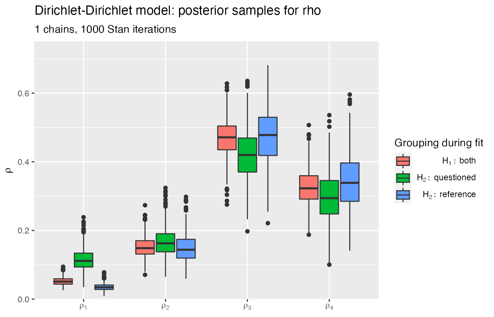

dirichletdirichlet-model.Rmd
library(rstanBF)
#> Loading required package: Rcpp
library(rsamplestudy)
library(dplyr)
#>
#> Attaching package: 'dplyr'
#> The following objects are masked from 'package:stats':
#>
#> filter, lag
#> The following objects are masked from 'package:base':
#>
#> intersect, setdiff, setequal, unionThis package implements the Dirichlet-Dirichlet model.
In this package, the model is referred by its short name: 'DirDir'.
Consider Dirichlet samples \(X_i\) from \(m\) different sources. Each source is sampled \(n\) times.
Dirichlet parameter are also assumed to be sampled from Dirichlet distributions.
We assume that \(\boldsymbol{\alpha}\) is known.
Let’s generate some data using rsamplestudy:
n <- 50 # Number of items per source
m <- 5 # Number of sources
p <- 4 # Number of variables per item
# The generating hyperparameter: components not too small
alpha <- c(1, 0.7, 1.3, 1)
list_pop <- fun_rdirichlet_population(n, m, p, alpha = alpha)Data:
list_pop$df_pop %>% head(10)
#> # A tibble: 10 x 5
#> source `x[1]` `x[2]` `x[3]` `x[4]`
#> <int> <dbl> <dbl> <dbl> <dbl>
#> 1 1 1.54e- 4 0.00679 0.402 0.591
#> 2 1 3.52e-30 0.798 0.0195 0.183
#> 3 1 2.02e-15 0.194 0.500 0.306
#> 4 1 5.26e- 2 0.000311 0.946 0.00105
#> 5 1 1.45e- 7 0.228 0.648 0.125
#> 6 1 1.12e-26 0.00656 0.0951 0.898
#> 7 1 3.21e-60 0.425 0.0708 0.504
#> 8 1 1.12e- 9 0.0270 0.579 0.394
#> 9 1 8.32e- 3 0.0200 0.522 0.450
#> 10 1 2.40e- 5 0.00818 0.982 0.00930Sources:
list_pop$df_sources %>% head(10)
#> # A tibble: 5 x 5
#> source `theta[1]` `theta[2]` `theta[3]` `theta[4]`
#> <int> <dbl> <dbl> <dbl> <dbl>
#> 1 1 0.0331 0.114 0.428 0.425
#> 2 2 0.118 0.0478 0.649 0.185
#> 3 3 0.292 0.386 0.143 0.180
#> 4 4 0.284 0.429 0.0748 0.212
#> 5 5 0.106 0.150 0.608 0.135We then need to simulate a situation where two sets of samples (reference and questioned data) are recovered.
These sets are compared, and the results evaluated using the Bayesian approach.
We want to evaluate two hypotheses:
One can generate these sets from the full data using rsamplestudy.
Let’s fix the reference source:
k_ref <- 10
k_quest <- 10
source_ref <- sample(list_pop$df_pop$source, 1)
# The reference source
source_ref
#> [1] 1
list_samples <- make_dataset_splits(list_pop$df_pop, k_ref, k_quest, source_ref = source_ref)
# The true (unseen) questioned sources
list_samples$df_questioned$source
#> [1] 2 2 2 2 2 2 3 3 4 4We want to use the background data to evaluate the hyperpriors, i.e., the between-source Dirichlet parameter.
Notice that we have 230 samples, with 250 as the population size. This should ensure that our hyperparameter estimates are good enough.
One can start to estimate the parameters for each source, although this is not required by the rstanBF package.
According to the model, this should be an estimate of the Dirichlet parameters \(\boldsymbol{\theta}_i\).
The package contains functions to compute ML estimators of Dirichlet parameters.
For now, they are hidden from the general namespace, but can still be called if needed.
Naive estimator:
df_sources_est <- rstanBF:::fun_estimate_Dirichlet_from_samples(list_samples$df_background, use = 'naive')
df_sources_est
#> # A tibble: 5 x 5
#> source `theta[1]` `theta[2]` `theta[3]` `theta[4]`
#> <int> <dbl> <dbl> <dbl> <dbl>
#> 1 1 0.0213 0.390 0.908 0.924
#> 2 2 0.123 0.0334 0.567 0.123
#> 3 3 0.294 0.619 0.202 0.224
#> 4 4 0.238 0.289 0.0707 0.217
#> 5 5 0.0992 0.259 0.674 0.152ML estimator:
df_sources_est_ML <- rstanBF:::fun_estimate_Dirichlet_from_samples(list_samples$df_background, use = 'ML')
df_sources_est_ML
#> # A tibble: 5 x 5
#> source `theta[1]` `theta[2]` `theta[3]` `theta[4]`
#> <int> <dbl> <dbl> <dbl> <dbl>
#> 1 1 0.106 0.217 0.448 0.449
#> 2 2 0.178 0.111 0.739 0.179
#> 3 3 0.303 0.531 0.178 0.226
#> 4 4 0.308 0.401 0.142 0.288
#> 5 5 0.155 0.233 0.737 0.169Compare with the real sources \(\boldsymbol{\theta}_i\):
list_pop$df_sources
#> # A tibble: 5 x 5
#> source `theta[1]` `theta[2]` `theta[3]` `theta[4]`
#> <int> <dbl> <dbl> <dbl> <dbl>
#> 1 1 0.0331 0.114 0.428 0.425
#> 2 2 0.118 0.0478 0.649 0.185
#> 3 3 0.292 0.386 0.143 0.180
#> 4 4 0.284 0.429 0.0748 0.212
#> 5 5 0.106 0.150 0.608 0.135The ML estimator is much more accurate.
We suppose that the within-source ML estimates are samples from the same hyper-source, so the procedure can be repeated.
We use again the ML estimator:
df_alpha_ML_ML <- df_sources_est_ML %>%
dplyr::select(-source) %>%
rstanBF:::fun_estimate_Dirichlet_from_single_source(use = 'ML')
df_alpha_ML_ML
#> # A tibble: 1 x 4
#> `theta[1]` `theta[2]` `theta[3]` `theta[4]`
#> <dbl> <dbl> <dbl> <dbl>
#> 1 2.23 2.84 3.76 2.70Compare with the real Dirichlet hyperparameter:
\(\boldsymbol{\alpha} = \left( 1, 0.7, 1.3, 1 \right)\)
rstanBF provides stanBF_elicit_hyperpriors, a function to estimate the hyperparameters according to a specified model:
list_hyper <- stanBF_elicit_hyperpriors(list_samples$df_background, 'DirDir', mode_hyperparameter = 'ML')
list_hyper
#> $alpha
#> [1] 2.231332 2.838182 3.758209 2.701595Once all is set, one can run the HMC sampler:
list_data <- stanBF_prepare_rsamplestudy_data(list_pop, list_samples)
obj_StanBF <- compute_BF_Stan(data = list_data, model = 'DirDir', hyperpriors = list_hyper)
#>
#> SAMPLING FOR MODEL 'stan_DirDir_H1' NOW (CHAIN 1).
#> Chain 1:
#> Chain 1: Gradient evaluation took 6.5e-05 seconds
#> Chain 1: 1000 transitions using 10 leapfrog steps per transition would take 0.65 seconds.
#> Chain 1: Adjust your expectations accordingly!
#> Chain 1:
#> Chain 1:
#> Chain 1: Iteration: 1 / 1000 [ 0%] (Warmup)
#> Chain 1: Iteration: 100 / 1000 [ 10%] (Warmup)
#> Chain 1: Iteration: 200 / 1000 [ 20%] (Warmup)
#> Chain 1: Iteration: 201 / 1000 [ 20%] (Sampling)
#> Chain 1: Iteration: 300 / 1000 [ 30%] (Sampling)
#> Chain 1: Iteration: 400 / 1000 [ 40%] (Sampling)
#> Chain 1: Iteration: 500 / 1000 [ 50%] (Sampling)
#> Chain 1: Iteration: 600 / 1000 [ 60%] (Sampling)
#> Chain 1: Iteration: 700 / 1000 [ 70%] (Sampling)
#> Chain 1: Iteration: 800 / 1000 [ 80%] (Sampling)
#> Chain 1: Iteration: 900 / 1000 [ 90%] (Sampling)
#> Chain 1: Iteration: 1000 / 1000 [100%] (Sampling)
#> Chain 1:
#> Chain 1: Elapsed Time: 0.04297 seconds (Warm-up)
#> Chain 1: 0.158257 seconds (Sampling)
#> Chain 1: 0.201227 seconds (Total)
#> Chain 1:
#>
#> SAMPLING FOR MODEL 'stan_DirDir_H2' NOW (CHAIN 1).
#> Chain 1:
#> Chain 1: Gradient evaluation took 5e-05 seconds
#> Chain 1: 1000 transitions using 10 leapfrog steps per transition would take 0.5 seconds.
#> Chain 1: Adjust your expectations accordingly!
#> Chain 1:
#> Chain 1:
#> Chain 1: Iteration: 1 / 1000 [ 0%] (Warmup)
#> Chain 1: Iteration: 100 / 1000 [ 10%] (Warmup)
#> Chain 1: Iteration: 200 / 1000 [ 20%] (Warmup)
#> Chain 1: Iteration: 201 / 1000 [ 20%] (Sampling)
#> Chain 1: Iteration: 300 / 1000 [ 30%] (Sampling)
#> Chain 1: Iteration: 400 / 1000 [ 40%] (Sampling)
#> Chain 1: Iteration: 500 / 1000 [ 50%] (Sampling)
#> Chain 1: Iteration: 600 / 1000 [ 60%] (Sampling)
#> Chain 1: Iteration: 700 / 1000 [ 70%] (Sampling)
#> Chain 1: Iteration: 800 / 1000 [ 80%] (Sampling)
#> Chain 1: Iteration: 900 / 1000 [ 90%] (Sampling)
#> Chain 1: Iteration: 1000 / 1000 [100%] (Sampling)
#> Chain 1:
#> Chain 1: Elapsed Time: 0.058016 seconds (Warm-up)
#> Chain 1: 0.212979 seconds (Sampling)
#> Chain 1: 0.270995 seconds (Total)
#> Chain 1:
#> Bridge sampling...
#> Finished.The results:
obj_StanBF
#> stanBF object containing posterior samples from H1, H2.
#> Model: Dirichlet-Dirichlet
#> Obtained BF: 0.6161821
#> Ran with 1 chains, 1000 HMC iterations.Posteriors:
plot_posteriors(obj_StanBF)
#> Missing plotting variable: using rho
Get the posterior predictive samples under all hypotheses:
df_posterior_pred <- posterior_pred(obj_StanBF)
head(df_posterior_pred, 10)
#> # A tibble: 10 x 6
#> `x[1]` `x[2]` `x[3]` `x[4]` Hypothesis Source
#> <dbl> <dbl> <dbl> <dbl> <chr> <chr>
#> 1 6.13e- 6 1.21e- 5 0.0783 0.922 Hp Both
#> 2 1.08e-13 1.45e- 3 0.997 0.00146 Hp Both
#> 3 1.63e-10 2.55e- 3 0.820 0.178 Hp Both
#> 4 4.92e- 2 8.52e- 1 0.0975 0.000940 Hp Both
#> 5 1.06e- 3 1.04e- 2 0.308 0.680 Hp Both
#> 6 7.70e- 9 6.90e- 1 0.0482 0.261 Hp Both
#> 7 2.78e- 4 2.44e- 1 0.728 0.0280 Hp Both
#> 8 2.79e- 9 1.05e- 1 0.363 0.532 Hp Both
#> 9 1.94e- 5 4.37e- 4 0.528 0.472 Hp Both
#> 10 1.17e- 1 3.64e-11 0.154 0.730 Hp Both